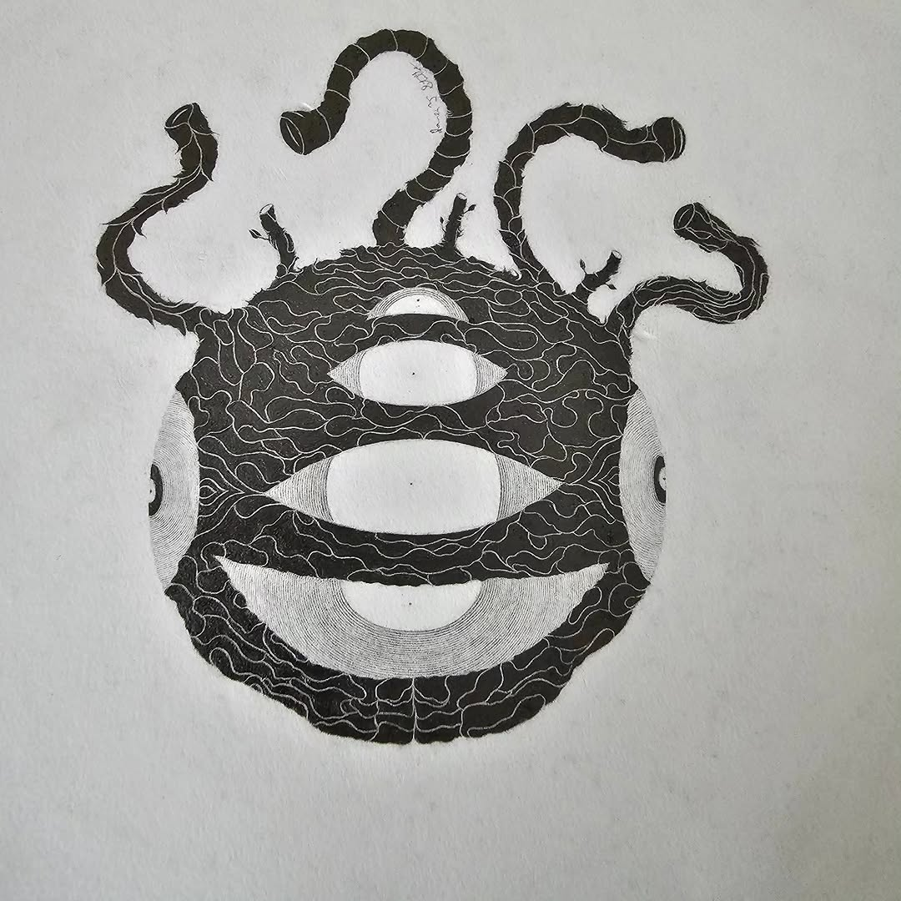

<section class="carousel-section">

  <h2 class="carousel-title">Selected Works</h2>

  <div class="carousel">

    <button class="carousel-btn prev" aria-label="Previous image">
      ‹
    </button>

    <div class="carousel-track-wrapper">

      <div class="carousel-track">

        <div class="slide">
          
        </div>

        <div class="slide">
          
        </div>

        <div class="slide">
          
        </div>

      </div>

    </div>

    <button class="carousel-btn next" aria-label="Next image">
      ›
    </button>

  </div>

</section>